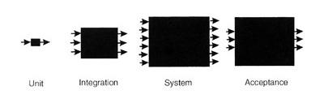

软件测试设计从业者指南
A Practitioner's Guide to Software Test Design 的中文译本，谨此向作者 Lee Copeland 致敬
本书部分原稿来自 Software-Test-Design-Guide-Cn
同时，上述译本并未完成完整翻译，本译本是在原稿基础上进行了大量优化并补充完善后使用 mdbook 发布
对此译本有任何意见或建议的，请与我联系
版权声明
本书英文版权归作者 Lee Copeland 所有，译本仅供参考、学习和交流
软件测试设计从业者指南
Lee Copeland 著
Artech House © 2004
本书始终以一种统一和易理解的的方式介绍所有重要测试设计技术，它帮助你选择最好的测试用例设计，找到软件缺陷，制定最佳开发策略等。
目录
A Practitioner's Guide to Software Test Design
- 第1节 黑盒测试技术
- 第2节 白盒测试技术
- 第3节 测试模式
- 第4节 技术支持
- 第5节 终极思考
- 附录A Brown & Donaldson Case Study
- 附录B Stateless University Registration System Case Study
- 术语
- 索引
- List of Figures
- List of Tables
- List of Examples
封底
本书以一种统一和易理解的的方式全面介绍了最新和实用的所有软件测试设计技术，是一本测试工程师、开发工程师、质量保证工程师、需求和系统分析者的必备手册。它帮助你选择最佳测试设计，用最少的时间和资源找到最多的缺陷，优化开发策略以减少开发资源浪费，帮助你评估测试效果、时间和成本。
在书中列举了大量关于软件测试技术的实例，帮助你全面掌握测试技术的应用。从比较熟悉的等价类划分法、边界值、判定表、状态迁移到新技术如测试用例、正交法和探索性测试，本书是专业测试人员不可多得的测试技能提升书籍，并且是大学软件测试设计课程的最佳参考书。
关于作者
Lee Copeland是软件测试国际知名咨询师，有着30年信息系统专业经验。他有包括商业和非盈利组织中软件开发，测试，过程提升等领域的多个技术和管理职位，同时他在美国和国际范围内教授研讨会并提供广泛的咨询。
A Practitioner's Guide to Software Test Design
Lee Copeland

Artech House出版
Boston • London
Library of Congress and British CIP information available on request 685 Canton Street Norwood, MA 02062 (781) 769-9750 www.artechhouse.com
46 Gillingham Street London SW1V 1AH +44 (0)20 7596-8750
Copyright © 2004 STQE Publishing
All rights reserved. No part of this book shall be reproduced, stored in a retrieval system, or transmitted by any means, electronic, mechanical, photocopying, recording, or otherwise without written permission from the publisher. International Standard Book Number: 1-58053-791-X Printed in the United States of America First Printing: November 2003
商标
All terms mentioned in this book that are known to be trademarks or service marks have been appropriately capitalized. Artech House Publishers and STQE Publishing cannot attest to the accuracy of this information. Use of a term in this book should not be regarded as affecting the validity of any trademark or service mark.
警告和免责声明
Every effort has been made to make this book as complete and accurate as possible, but no warranty or fitness is implied. The information provided is on an "as is" basis. The authors and the publisher shall have neither liability nor responsibility to any person or entity with respect to any loss or damages arising from the information contained in this book.
鸣谢
给我的妻子 Suzanne，还有我们的好孩子和孙子孙女们
Shawn and Martha
Andrew and Cassandra
David
Cathleen
Katelynn and Kiley
Melissa and Jay
Ross, Elizabeth, and Miranda
Brian and Heather
Cassidy and Caden
Thomas and Jeni
Carrie
Sundari
Rajan
同时感谢 Wayne, Jerry, Dani, Ron, and Rayanne
感谢他们这么多年的鼓励和支持

Lee Copeland是软件测试国际知名咨询师，有着30年信息系统专业经验。他有包括商业和非盈利组织中软件开发，测试，过程提升等领域的多个技术和管理职位，同时他在美国和国际范围内教授研讨会并提供广泛的咨询。
作为软件质量工程领域的咨询师，Lee 奔波世界各地为帮助客户提升软件测试有效性，另外，他是软件测试的全球第一峰会 STAREAST 和 STARWEST 的执行主席。
前言
A Practitioner's Guide to Software Test Design 是唯一一本包含了当今测试设计方法的书，以往软件测试人员需要通过搜索大量书籍、期刊、网络来获取这些关键信息。
测试设计的价值:
个人认为，完整的、仔细的、系统的测试活动，对于发现大量缺陷的测试设计以及相应的测试活动是很有效的。
----Boris Beizer
本书聚焦于软件测试设计，没有测试设计、测试管理、测试团队建设等的话题，虽然他们在软件测试中很重要，它们往往忽略测试人员真正需要的---更多的测试方面的实践，特别是测试用例设计。其他优秀书籍介绍了软件测试的全过程。其中我最爱的一本是 Rick Craig 和 Stefan Jaskiel 写的 Systematic Software Testing。
A Practitioner's Guide to Software Test Design 通过详细示例和一步步的演示阐述测试设计方法，指引读者清晰理解测试设计技术。
当今测试面临的挑战
对于一定规模的系统，测试所有不同逻辑和输入数据的所有组合是不可能的，测试面临无穷集合的选择，每个逻辑和输入都是有必要测试的，但是测试人员只能选取很小的一个子集进行测试因为有资源限制。本书目的是帮助你分析，设计，选择子集，实现最小子集测试达到最大覆盖，发现最多缺陷。
明智地选择测试用例是至关重要的，如果一个系统已经商用，那么遗漏一个缺陷将会导致组织遭受巨大损失。
A Practitioner's Guide to Software Test Design 描述了一些列测试设计策略的关键点，帮助软件测试人员提升测试有效性和效率。
结构和方法
A Practitioner's Guide to Software Test Design 阐述当今最重要的软件测试设计技术。一些测试设计技术众所周知的，一些是被提到过但不广泛知晓，其他一些很少被人知道，但很有效。本书集这些测试技术于一体，帮助测试设计者更高效的工作。
每个测试设计技术都是从实践中出方法,而不是基于理论。每个测试设计方法首先通过一个例子介绍，然后阐述细节。可能情况下，附加的例子也会介绍到，并会根据问题类型介绍该方法适用性和限制。每个测试设计方法会有关键点说明，并有相应练习和参考书作为章节结尾。测试人员可以实时在项目中运用这些方法。
作者的提示
我很喜欢双积分号

和所有测试人员一样，我们集中于实践，而非理论。
每个测试设计方法是自成系统的，因为章节集中、简洁、独立，他们可以乱序阅读。测试人员可以选择和当前工作最相关的部分。
适合读者
本书适合以下人员阅读：
- 软件测试工程师（有职责需要进行测试用例设计），本书详细介绍最高效的测试用例设计方法。
- 软件开发人员，随着极限编程和敏捷开发方法的到来，要求开发人员做好测试，很多开发人员都没有接触到本书描述的设计方法。
- 测试和开发经理至少必须在原则上了解其员工执行的工作。本书不仅介绍重要测试设计方法的全貌，同时帮助管理者评估测试效果，测试时间和成本。
- 负责定义和改进其软件测试过程的质量保证和过程改进工程师。
- 教授和专家，可以为他们软件测试设计课程提供重要参考。
鸣谢
以下人员对写作此书提供了无私的帮助： Anne Meilof, Chuck Allison, Dale Perry, Danny Faught, Dorothy Graham, Geoff Quentin, James Bach, Jon Hagar, Paul Gerrard, Rex Black, Rick Craig, Robert Rose-Coutré, Sid Snook, and Wayne Middleton.
真诚的感谢他们。本书所有的错误归咎于他们（呵呵，开个玩笑！）
一些最后的声明
这本书包含大量网络上的参考。当手稿提交给出版商时，这些参考文献是正确的。不幸的是，当这本书在读者手中时，它们可能已经失效了。
在每一章的标题页上加上一段简短的引文已经成为作者的标准做法。不幸的是，这种做法已变得如此普遍，以至于所有好的引文都被使用了。 只是为了好玩，我选择在每一章的标题页上加上一个 2003 年 Bulwer Lytton 小说大赛获奖作品 (http://www.bulwer-lytton.com). 自1982年以来，圣何塞州立大学英语系赞助了这项活动，这项竞赛向作家们提出了挑战，要求他们为所有可能最糟糕的小说创作开场白。它的灵感来源于爱德华·乔治·布尔沃·利顿，他的小说《保罗·克利福德》的开头是：
"It was a dark and stormy night; the rain fell in torrents-except at occasional intervals, when it was checked by a violent gust of wind which swept up the streets (for it is in London that our scene lies), rattling along the housetops, and fiercely agitating the scanty flame of the lamps that struggled against the darkness."
我感谢圣何塞州立大学的斯科特·赖斯博士允许我拙劣的使用这些示例性插图。希望本书中的任何内容都不会赢得这一荣誉。
致谢
Mick Jagger 的漫画由 Martin O'Loughlin 版权所有，并经许可使用。
剪贴画版权归 Corel Corporation 所有，并根据许可协议使用。
参考
Beizer, Boris (1990). Software Testing Techniques (Second Edition). Van Nostrand Reinhold.
Craig, Rick D. and Stefan P. Jaskiel (2002). Systematic Software Testing. Artech House Publishers
第一章 测试过程
概述
The flock of geese flew overhead in a 'V' formation—not in an old-fashioned-looking Times New Roman kind of a 'V', branched out slightly at the two opposite arms at the top of the 'V', nor in a more modern-looking, straight and crisp, linear Arial sort of 'V' (although since they were flying, Arial might have been appropriate), but in a slightly asymmetric, tilting off-to-one-side sort of italicized Courier New-like 'V'—and LaFonte knew that he was just the type of man to know the difference. [1]
鹅群在头顶上以 “V” 字形飞行，不像古罗马时期的新 “V” 字形，在 “V” 字形顶端的两个相对的臂上略微分叉，也不是更现代、笔直、清晰、线性的 Arial 字形的 “V” （尽管它们在飞行时，Arial 可能是合适的），但是在一个稍微不对称的，向一边倾斜的，类似于新的斜体字母 “V” 的情况下，拉方特知道他就是那种知道区别的人。
— John Dotson
[1]如果你认为上面的故事和软件测试没什么相关性，那么你是对的。有关解释，请阅读前言中的 “一些最后的声明”。
测试
什么是测试？业界有很多定义，普遍比较认可的定义是：测试是比较实际结果和预期结果的过程。一个比较正式的定义是由 IEEE 在 IEEE Standard 610.12-1990 给出的，定义如下：
在指定条件下运行系统或组件，观察或记录结果，并对系统或组件的某些方面进行评估的过程
定义中提到的“指定条件”也体现在本书的主题：测试用例中。
关键点： 测试是比较实际结果和预期结果的过程。
Rick Craig 和 Stefan Jaskiel 在 Systematic Software Testing 一书中提出了测试的扩展定义：
测试是软件工程生命周期中的并发过程，利用和维护测试件以便评估和提升被测软件的质量。
该视角除了包含 IEEE 对测试执行的关注之外，还包括创建测试用例时的规划、分析和设计。
不同的组织和个人有各种软件测试的视角。Boris Beizer 描述了五个级别的测试成熟度。(他自己叫阶段，但是今天我们知道正确的学术术语叫做级别，通常有五个级别）
级别0 - “测试和调试没有区别。”除了支持调试之外，测试没有任何目的。可能偶尔会发现一些缺陷，但没有正式的方法去找出它们。
级别1 - “测试的目的是证明软件能工作。”这个观点的前提是基于软件基本上是正确实现的，因此很容易导致人们无法发现缺陷。Glenford Myers 指出这个观点会导致我们去选择不会失败的测试用例，而不会构造古怪的用例去发现深层次的问题。
级别2 - “测试的目的是证明软件不能工作。”这是一种与上面不同的心态，它假设软件不工作，促使测试人员去发现缺陷。在这种观点指引下，我们会有意识地选择系统边缘、异常部分、角落和缝隙来构造古怪的用例。
级别3 - “测试的目的不是为了证明什么，而是为了降低系统出问题的风险到可接受范围。”虽然我们可以证明一个系统只有一条测试用例的不通过，但却永远不可能证明系统是没有问题的，为此我们需要测试所有有效和无效输入的组合。我们的目标是依据缺陷评估软件质量，为开发人员提供有关软件缺陷的信息，以及给到管理者如果我们在当前状态下将系统交付给客户，会对我们组织造成怎样负面影响的评估。
级别4 - “测试不是一种行为，它是一种无需太多测试就能开发出低风险软件的精神准则。”在这个成熟度级别上，我们专注于让软件从一开始就更易于测试。这包括对其需求、设计和代码的审查，另外，还意味着要编写可以协助执行测试的工具。进一步来说，包括编写自测代码，主动报告错误，而不是要求测试人员发现它们。
当前挑战
当我问我的学生关于测试面临的问题时他们回答如下：
- 没有足够的时间进行合理的测试
- 要测试的输入组合太多
- 难以确定每次测试的预期结果
- 不存在或经常改变的需求
- 没有足够的时间进行全覆盖的测试
- 测试过程中没有培训
- 没有工具支持
- 管理者既不懂测试也不关注质量
本书不包含可以创造额外的时间，得到更好的需求，或者遇到更开明的管理等的魔法棒，但是它能够为你提供一些测试技术来提高测试效率和效果，比如帮助你选择和构造测试用例，让你在使用比之前更少资源的前提下发现更多的问题。
测试用例
为了更有效和更高效的测试，测试用例必须经过设计，而不是简单拼凑。“设计”这个词有多种定义：
- 在头脑中构思或塑造；发明：想出一个参加 STAR(Software Testing Analysis&Review) 测试会议的好理由。制定计划;策划：为新产品设计营销策略。
- 以书面形式做系统化的计划；设计一个建筑物；设计一个测试用例。
- 为特定目的或效果而创造或设计：设计一个吸引所有年龄段的人的游戏。。
- 为设立目标和目的而设定计划。
- 以艺术的或高技能的方式创作或执行。
关键点： 为了更有效和更高效的测试，测试用例必须经过设计，而不是简单拼凑。
这些定义中的每一个都适用于良好的测试用例设计。关于测试用例设计，Roger Pressman 写到：
软件和其他工程产品的测试设计可能与产品本身的初始设计一样具有挑战性。但是...测试工程师经常认为测试是在开发之后的事情，编写测试用例时也只是感觉良好，却不能保证做到完整覆盖。回顾测试的目标，我们必须设计出最有可能以最少的时间和精力发现最多错误的测试用例。
精心设计的测试用例包含以下三个部分：
- 输入
- 输出
- 执行顺序
关键点： 测试用例包含输入、输出、执行顺序。
输入：
输入经常被认为是在键盘上输入数据，虽然这是一个系统输入的重要来源，但是数据也可以来自其他来源：接口系统、接口设备、数据库、文件、以及系统运行时所处的环境。
输出：
输出同样有很多种，通常被认为是显示在屏幕上的数据。但输出还可以是发送到接口系统和外部设备、写入文件或数据库的数据。系统的执行可能对环境或状态的改变也是输出。
所有相关的输入输出都是测试用例的重要组成部分。在设计测试用例时，确定预期结果是一个 oracle 的职责。
oracle 是所有为测试设计者提供预期结果的程序、过程或数据。Beizer 列出了5种类型的 oracles：
- 初级 Oracles - 只是运行程序和查看结果，如果它看起来正确，那么他就是正确的。
- 回归测试套件 - 运行程序并比较输出结果是否和该用例在上个版本得到的结果相同。
- 数据验证 - 运行程序并和相关标准比较，比如表格、公式、其他可接受的有效输出定义。
- 付费测试套件 - 运行程序并和已经过验证的标准测试套件结果比较，在对编译器、Web 浏览器、SQL 处理器等进行测试时会使用此种方法。
- 已有程序 - 运行程序并和另一个版本的程序输出进行比较。
执行顺序
依据测试执行顺序有两种测试用例设计风格
-
串联测试用例 --- 测试用例相互关联，比如，第一条用例为第二条用例创建执行环境，测试数据库的时候有如下测试用例：
- 创建一个记录
- 读取这个记录
- 更新这个记录
- 读取这个记录
- 删除这个记录
- 读取这个删除的记录
这里每个测试用例都基于前一个用例。优势是用例足够小而简单。劣势是一个用例失败，接着用例全部失败。
- 独立测试用例 --- 每个用例自成系统，测试用例之间不相互依赖，优势是用例可以乱序执行。劣势是每个测试用例会比较庞大和复杂，更难设计、构建和维护。
测试类型
测试通常分为黑盒测试和白盒测试。

黑盒测试是一种完全基于需求和规范的测试策略。与白盒测试不同，黑盒测试不需要了解被测软件的内部路径、结构或实现。
白盒测试是一种基于被测软件的内部路径、结构和实现的测试策略。与黑盒测试不同，白盒测试通常需要足够的编程能力。
另外还有灰盒测试，这种方法要求先了解软件内部信息，之后用获取的信息进行黑盒测试。
测试层级
通常，测试包括测试用例设计表现为四个不同的层级：
- 单元测试 - 单元是开发人员创建的“最小”软件块，单元测试通常是开发员的工作，存储在一个单独的磁盘文件中。不同程序语言有不同的单元定义，比如在 C++ 和 java 中一个类是一个单元，在 C 语言中一个函数是一个单元，在弱结构化语言中，Basic 和 COBOL 也许是整个程序作为一个单元。
关键点： 典型的测试层级分为：单元测试、集成测试、系统测试、验收测试。
-
集成测试 - 在集成测试中我们组装所有模块为一个子系统或者完整系统进行测试。很有可能单个函数没有问题，但并不能保证连接起来也能正常的工作。一个典型的例子是这个 C 程序及其附属功能：
/* main program */ void oops(int); int main(){ oops(42); /* call the oops function passing an integer */ return 0; } /* function oops (in a separate file) */ # include <stdio.h> void oops(double x) {/* expects a double, not an int! */ printf ("%f\n",x); /* Will print garbage (0 is most likely) */ }
单独测试这两个单元时都是可以通过的，但将这两个单元集成之后就出现问题了。main 函数传一个整形参数给 oops 函数，但是 oops 函数需要的是 double 型的整数，因此出现了问题。将集成测试作为集成过程的一部分是至关重要的。
-
系统测试 - 系统是指由所有需要交付给客户的软件（可能还有硬件，用户手册，培训材料等）构成的产品。系统测试聚焦于最高层级集成测试的缺陷发现。典型的系统测试包括很多测试类型：功能性、可用性、安全性、国际化和本地化、可靠性、容量、性能、备份和恢复、便携性等等。本书只涉及功能性测试，虽然其他类型的测试很重要，但它们超出了本书的范围。
-
验收测试 - 验收测试定义为所有上述测试已经完成，交付给客户后获得认可并支付酬劳。从客户的角度，希望尽可能详尽的进行验收测试（类似于系统测试）；从提供商的角度看，最好进行最小程度的测试，因为涉及酬劳支付。在验收测试前有几个问题需要明确：谁来定义验收测试的级别？谁创建测试脚本？谁执行测试？验收测试的合格/不合格标准是什么？我们什么时候以及如何获得报酬？
以上测试层级并不适用于所有系统，因为它的前提条件是由单元到集成到子系统、再到系统这个过程之间有相当长的时间。而在 web 系统开发中，往往由概念到代码再到产品只需要数个小时就可以完成，这种情况下，单元测试->集成测试->系统测试这样的层级就没有多大意义了。许多 Web 测试人员使用如下备用层级：
- 代码质量
- 功能
- 可用性
- 性能
- 安全性
不可能测试所有组合
在 Robert Binder 的经典书籍 Testing Object-Oriented Systems 中，他提出一个不可能测试所有组合的例子：
int blech (int j) {
j = j -1; // should be j = j + 1
j = j / 30000;
return j;
}
注意程序中第二行是错误的，函数接收 j 后减 1 再赋值给 j，最后除以 30000（整除，余数忽略）返回。如果在16位机器上，输入范围是 -32768 到 32767，那么这个小小的程序就需要 65536 个输入来测试（你们公司的程序肯定比这个大多了），你有这个时间和精力测试这 65536 个用例吗？当然不行，那么我们选择什么样的输入呢？考虑以下输入及其检测此缺陷的能力：
| 输入（j） | 预期结果 | 实际结果 |
|---|---|---|
| 1 | 0 | 0 |
| 42 | 0 | 0 |
| 40000 | 1 | 1 |
| -64000 | -2 | -2 |
哎呀！看到了吗，所选的测试用例均未检测到此缺陷，实际上只有四个输入值可以发现这个问题。四个全部选中的几率有多大呢？选中四个之中某一个的几率又有多大？你彩票中奖的几率有多大？你对这三个问题的回答都一样吗？
总结
- 测试是为了评估和提升被测软件的质量，贯穿于软件开发、使用和维护等的整个生命周期的过程。(Craig and Jaskiel)
- 软件和其他工程产品的测试设计可能与产品本身的初始设计一样具有挑战性。但是...测试工程师经常认为测试是在开发之后的事情，编写测试用例时也只是感觉良好，却不能保证做到完整覆盖。回顾测试的目标，我们必须设计出最有可能以最少的时间和精力发现最多错误的测试用例。(Pressman)
- 黑盒测试是一种完全基于需求和规范的测试策略；白盒测试是一种基于被测软件的内部路径、结构和实现的测试策略。
- 通常，测试包括测试用例设计表现为四个不同的层级：单元测试、集成测试、系统测试和验收测试。
练习
哪四个输入能够发现隐藏的缺陷？你是如何确定它们的？ 作为寻找其他缺陷的方法，这对您有何启发？
int blech (int j) {
j = j -1; // should be j = j + 1
j = j / 30000;
return j;
}
参考
Beizer, Boris (1990). Software Testing Techniques (Second Edition). Van NostrandReinhold.
Binder, Robert V. (2000). Testing Object-Oriented Systems: Models, Patterns, and Tools. Addison-Wesley.
Craig, Rick D. and Stefan P. Jaskiel (2002). Systematic Software Testing. Artech HousePublishers.
IEEE Standard 610.12-1990, IEEE Standard Glossary of Software EngineeringTerminology, 1991.
Myers, Glenford (1979). The Art of Software Testing. John Wiley & Sons.
Pressman, Roger S. (1982). Software Engineering: A Practitioner's Approach (FourthEdition). McGraw-Hill.
第二章 案例研究
They had but one last remaining night together, so they embraced each other as tightly as that two-flavor entwined string cheese that is orange and yellowish-white, the orange probably being a bland Cheddar and the white . . . Mozzarella, although it could possibly be Provolone or just plain American, as it really doesn't taste distinctly dissimilar from the orange, yet they would have you believe it does by coloring it differently.
在属于他们的最后一个晚上，他们紧紧地拥抱在一起，就像橙色和黄白色两种口味缠绕在一起的串奶酪一样，橙色可能是平淡的切达干酪，而白色是奶酪。尽管它可能是普罗卧干酪或纯美式，因为它的味道确实与橙色没有明显不同，但他们会通过不同的颜色让您相信它们确实有所不同。
— Mariann Simms
为什么要进行案例研究？
本书在附录中提供了两个案例研究。附录 A ： "Brown & Donaldson"，一家在线经纪公司；附录 B ："无国籍大学注册系统"。这些案例研究中的示例用于说明本书中描述的测试用例设计技术。此外，本书的一些练习基于案例研究。以下各节简要介绍了案例研究。必要时，阅读附录A和附录B中的详细信息。
Brown & Donaldson
Brown & Donaldson (B&D) 是本书虚构的一家用于测试设计技能练习的在线股票经纪公司。B&D 原本是用于 Software Quality Engineering 的 Web/eBusiness 测试课程（详见：http://www.sqe.com）

附录A中有一些截图，整本书都会使用到其中的一些作为参考。 B&D 真实地址是 http://bdonline.sqe.com，如有雷同，纯属巧合。
你可以试试 B&D 网站，首先创建一个虚拟账号，通过此帐号请求或执行的任何交易都只发生 B&D 的虚拟世界。创建帐户后，您将直接使用用户名和密码登录。创建新帐户时，将要求您提供授权代码：8个1。
该网站还包含许多来自 B&D 案例研究的可下载文档，可用于帮助您为自己的 Web 项目制定测试计划。
无国籍大学注册系统
每个州都有一个州立大学，本案例研究使用了一个虚构的无国籍大学线上注册系统，请不要尝试从 Brown & Donaldson 兑现您的股票以投入无国籍大学注册系统。
附录 B 的文档中包含无国籍大学注册系统的用户接口文档，文档根据一般用户调用接口顺序展示。从登录开始，接着接着根据数据库设置的字段，提供学生、课程、班级的增加/修改/删除。 最后的数据输入页为每个学生提供部分特定课程的选择，以及其他管理功能的定义。
第一节：黑盒测试技术
章节列表
第三章 ： 等价类
第四章 ： 边界值
第五章 ： 判定表
第六章 ： 正交法
第七章 ： 状态迁移
第八章 ： 域分析
第九章 ： 用例测试
部分概述
定义
黑盒测试是一种完全基于需求和规范的测试策略。与白盒测试不同，黑盒测试不需要了解被测软件(SUT)的内部路径、结构或实现。

黑盒测试的一般流程是：
- 需求分析
- 验证被测系统是否能够正确处理基于规范的有效输入和无效输入
- 确定预期结果
- 使用选定的输入构建测试
- 运行测试
- 比较实际结果和预期结果
- 确定被测软件的正常功能
适用性
黑盒测试可以应用于系统开发的各个层级 —— 单元测试、集成测试、系统测试和验收测试。

即使软件规模从模块到子系统再到系统不断增大，输入和输出越来越复杂，但测试方法依然可以保持不变。同时，随着规模的扩大，使用白盒测试会有太多的路径需要执行，因此我们只能采用黑盒测试。
劣势
当使用黑盒测试时，测试人员永远无法确定测试覆盖率有多少。无论测试人员多么聪明或勤奋，某些路径也许就是覆盖不到。比如下面的例子，使用一条测试用例就能发现该程序“功能”的概率有多少？
if (name=="Lee" && employeeNumber=="1234" &&
employmentStatus=="RecentlyTerminatedForCause") {
send Lee a check for $1,000,000;
}
关键点： 使用黑盒测试时，测试人员永远无法确定已经测试了多少。
为了使用黑盒测试发现所有缺陷，测试人员需要构建所有可能的有效和无效的输入组合。然而这种详尽的输入测试几乎是不可能的，我们只能选择输入组合的一个子集（通常是一个非常小的子集）。
在 The Art of Software Testing 一书中，Glenford Myers 提供了一个很好的例子，说明了详尽的测试是徒劳的：怎么样完全测试一个编译器？通过编写所有可能的有效和无效程序。对于那些必须记住以前发生过的事情（即，记住它们的状态）的系统来说问题更严重，在这些系统中，我们不仅必须测试每个可能的输入，还必须测试每个可能输入的可能顺序。
关键点： 尽管我们无法测试所有内容，但规范的的黑盒测试会指导测试人员选择在发现缺陷方面既高效又有效的测试子集。
优势
尽管我们无法测试所有内容，但规范的的黑盒测试会指导测试人员选择在发现缺陷方面既高效又有效的测试子集，这些子集能够比随机选取同样数量测试用例发现更多的缺陷。规范的黑盒测试有助于最大限度地提高我们的测试投资回报。。
参考
Myers, Glenford J. (1979). The Art of Software Testing. John Wiley & Sons.
第三章 等价类
On the fourth day of his exploration of the Amazon, Byron climbed out of his inner tube, checked the latest news on his personal digital assistant (hereafter PDA) outfitted with wireless technology, and realized that the gnawing he felt in his stomach was not fear—no, he was not afraid, rather elated—nor was it tension—no, he was actually rather relaxed—so it was in all probability a parasite.
在亚马逊探险的第四天，拜伦爬出内胎，在配备无线技术的个人数字助理（以下简称 PDA）上查看最新消息，意识到他胃里感到的痛苦并不是恐惧 ——不，他并不恐惧，而是兴高采烈——也不是紧张——不，他实际上相当放松——所以这很可能是一种寄生虫。
— Chuck Keelan
简介
等价类划分法是一种能够将测试用例的数量减少到可管理的水平，同时保持合理测试覆盖率的技术。几乎所有的测试人员都曾下意识的使用过这种简单的技术，尽管他们可能不知道它是一种正式的测试设计方法。许多测试人员已经从逻辑上推断出它的用法，而其他人发现它仅仅是因为没有时间进行更彻底的测试。
考虑下面这种情况，我们正在为人力资源系统编写一个模块，该模块决定如何根据一个人的年龄处理就业申请。规则如下：
0 –16 ： 不予雇佣
16–18 ： 只能兼职雇用
18–55 ： 可以聘请为全职员工
55–99 ： 不予雇佣
注解： 如果您发现这些规则存在问题，请不要担心，这样写是有目的的，将在下一章中修复。
观察
有了这些规则，我们的组织就不会雇用 Doogie Houser, M.D. (电视剧《天才小医生》主角) 或 Col. Harlan Sanders(肯德基的创始人)，一个太年轻，另一个太老。
我们是否需要使用以下年龄段来测试上面的规则：0, 1, 2, 3, 4, 5, 6, 7, 8, ..., 90, 91, 92, 93, 94, 95, 96, 97, 98, 99。如果我们有很多时间当然是可以的（我不介意这种令人麻木的重复，我们是按小时计酬的）。如果程序是下面这样实现的，我们需要测试所有年龄（如果你没有编程背景，也不要担心，这些例子很简单，只需阅读代码，你就会懂它的意思）。
If (applicantAge == 0) hireStatus="NO";
If (applicantAge == 1) hireStatus="NO";
…
If (applicantAge == 14) hireStatus="NO";
If (applicantAge == 15) hireStatus="NO";
If (applicantAge == 16) hireStatus="PART";
If (applicantAge == 17) hireStatus="PART";
If (applicantAge == 18) hireStatus="FULL";
If (applicantAge == 19) hireStatus="FULL";
…
If (applicantAge == 53) hireStatus="FULL";
If (applicantAge == 54) hireStatus="FULL";
If (applicantAge == 55) hireStatus="NO";
If (applicantAge == 56) hireStatus="NO";
…
If (applicantAge == 98) hireStatus="NO";
If (applicantAge == 99) hireStatus="NO";
鉴于此实现，任何一组测试通过的用例都不能告诉我们下一次测试可以执行什么样的用例，它可能会通过，也可能会失败。
幸运的是，程序员不会这么写程序（至少不会经常这么写），一个好点的程序员也许是这样写的：
If (applicantAge >= 0 && applicantAge <=16)
hireStatus="NO";
If (applicantAge >= 16 && applicantAge <=18)
hireStatus="PART";
If (applicantAge >= 18 && applicantAge <=55)
hireStatus="FULL";
If (applicantAge >= 55 && applicantAge <=99)
hireStatus="NO";
很明显，对于上面这个常见实现的第一个要求，我们不必测试 0-16 的所有数字，只需要测试其中的一个数字就可以了，那么选什么数呢？所有这个范围的数字任何一个都可以。其他范围也是一样。这里的范围就可以定义为等价类。一个等价类包含一组数据，这些数据对程序或模块来说都是一样的。在测试中，类别中的任一数据都是和其他数据等价的。具体来说，我们希望：
- 如果一个等价类中的一条用例发现了缺陷，那么这个等价类中的所有其他测试用例都能够发现同样的缺陷。
- 如果一个等价类中的一条用例未发现缺陷，那么这个等价类中的所有其他测试用例也无法发现缺陷。
关键点： 如果你认为某一组用例形成了一个等价类，那么：
- 他们都测试同样的东西。
- 其中一条用例发现一个 bug，其他的很可能也会。
- 其中一条用例没有发现 bug，其他的可能也不会。
Cem Kaner Testing Computer Software
当然，这种方法假设存在一个定义了各种等价类的规范，它还假设程序员没有做一些奇怪的事情，比如
If (applicantAge >= 0 && applicantAge <=16)
hireStatus="NO";
If (applicantAge >= 16 && applicantAge <=18)
hireStatus="PART";
If (applicantAge >= 18 && applicantAge <=41)
hireStatus="FULL";
// strange statements follow
If (applicantAge == 42 && applicantName == "Lee")
hireStatus="HIRE NOW AT HUGE SALARY";
If (applicantAge == 42 && applicantName <> "Lee")
hireStatus="FULL";
// end of strange statements
If (applicantAge >= 43 && applicantAge <=55)
hireStatus="FULL";
If (applicantAge >= 55 && applicantAge <=99)
hireStatus="NO";
使用等价类方法，我们将测试用例的数量从 100 个（测试每个年龄）减少到 4 个（每个等价类测试一个年龄）——这是一个显著的节约。
现在，我们准备好开始测试了吗？也许还没有，我们需要为像 969、-42、FRED 和 &$#!@ 这样的无效输入值构建用例吗？正如任何优秀的顾问都会告诉你的那样，答案是：“这要看情况”。为了理解这个答案，我们需要了解一种来自面向对象编程的方法，称为契约式设计。
注解： 根据圣经，Methuselah 是在969岁死的，感谢 Gideons 创造了这么好记的数据而不需要上网查。
在法律上，契约是两方（或多方）之间具有法律约束力的协议，定义双方能做什么和不能做什么，各自承诺形成互利。
在契约式设计中，模块（在面向对象范式中称为“方法”，但“模块”是一个更通用的术语）是由前置条件和后置条件定义的。后置条件定义了模块需要做什么（计算一个值，打开一个文件，打印一个报表，更新数据库记录，改变系统状态等）。前置条件定义了模块所需的内容，以便满足其后置条件。比如：你有一个模块叫做 openFile，它需要做什么？打开一个文件。打开文件的合理前提是什么？第一，文件是存在的。第二，我们需要提供文件名称或其他可识别信息。第三，该文件必须是“可打开的”，也就是说，它不能已经被另一个进程以独占方式打开。第四，我们需要有权限，等等。前置条件和后置条件在模块和调用它的其他模块之间建立契约。
契约式测试基于契约式设计哲学，它的思路是只为满足前提条件的情况创建测试用例。比如，对于 openFile 模块我们不会测试文件不存在的情况，理由很简单，如果文件不存在，openFile 模块没有承诺需要可以工作。如果没有声明它将在特定条件下工作，则无需测试该条件。
更多信息： 关于契约式设计的更多信息，可以看 Bertrand Meyer 的书： Object-Oriented Software Construction
此时测试人员通常会提出抗议。是的，他们同意该模块并没有声称在这种情况下可以工作，但是如果在生产过程中违反了前置条件怎么办？系统会怎么做？我们是能在屏幕上看到一个拼写错误的单词还是冒个烟？
另一种不一样的设计方法是防御式设计。在这种情况下，模块被设计为可以接受任何输入。如果遵循了前置条件，模块将达到其正常的后置条件。如果没有遵循前置条件，模块会返回一个错误码，抛个异常（取决于所使用的语言）等以通知调用者，这个通知实际上是模块的另一个后置条件。基于此方法我们可以定义防御式测试：一种在正常和异常前提条件下进行测试的方法。
看点： 我班的一个学生，我们叫他 Fred 吧，他说他并不真正关心正在使用哪种设计方法，他经常用的就是防御式测试。当我问为什么？他说，如果模块不工作，应该是谁的责任？负责人还是测试人员？
上面两种设计方法怎么样应用于等价类呢？我们需要测试像 -42、FRED 和 &$#!@ 这样的输入吗？如果我们用契约式设计和契约式测试答案是否，如果我们是防御性设计和防御式测试，答案是是。问一下程序设计人员他们用的什么方法，如果答案是契约或者防御式设计，那么你知道应该要怎么测试。如果是“啊？”，意味着设计人员没有考虑过模块如何对接，也没有考虑过前置条件和后置条件的契约。那么集成测试将会是发现缺陷的主要时期，这些缺陷将比预期的更复杂并花费更多时间。